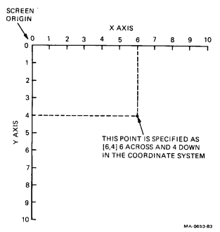
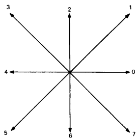
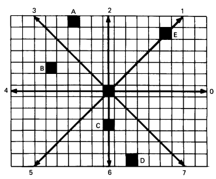
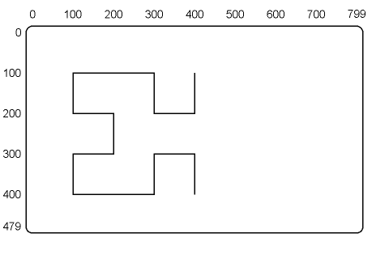

| About | Contents | Chapter 2 |
ReGIS is a graphics instruction set from Digital. This chapter describes how to use ReGIS with the VT300. You can use ReGIS to create graphics for display or printing.
ReGIS is a symbol system describing the parts of an image. You build an image by combining standard geometric forms: dots, lines, curves, circles, and arcs. You can also define text characters and add shading to your images.
ReGIS lets you describe each geometric form with a few command characters. For example, ReGIS lets you draw a circle of any size, at any point on the screen. You simple specify (1) the command to draw the circle, (2) the location of the center of the circle, and (3) any point on the circumference of the circle.
ReGIS has 10 basic commands (Table 1-1). Each command has several options. The following chapters describe each command and its options.
| Command Letter | ReGIS Command | Description |
|---|---|---|
| S | Screen | Provides screen controls, such as erasing the screen. |
| W | Write | Provides writing controls, such as writing shades. |
| P | Position | Moves the graphics cursor without performing any writing. |
| V | Vector | Draws vectors (straight lines) between the screen locations you specify in the command. |
| C | Curve | Draws circles and arcs, using the screen locations you specify in the command. |
| T | Text | Controls the display of text strings in graphics, and lets you specify characters to display. |
| L | Load | Defines and loads alternate characters you can display with the text command. |
| @ | Macrograph | Defines a command string as a macrograph. You use macrographs to store and recall other ReGIS command strings. |
| R | Report | Reports information such as the active position and error codes. |
| F | Polygon Fill | Fills in a single closed figure, such as a circle or square. |
| ; | Resynchronization | Resynchronizes the flow of ReGIS command strings to the beginning of a new command. |
The following conventions apply to the ReGIS commands in this manual.
You can use uppercase and lowercase letters with ReGIS commands (except text in a quoted string). This manual uses uppercase letters for clarity.
Angle brackets < > indicate that you can select different values. The <values> in the angle brackets define what type of information you can use, but the angles are not part of the ReGIS syntax.
[X,Y] indicates you can select screen position values. The brackets are part of the ReGIS command syntax. You can use both values (X and Y) or just one value (X or Y).
This section describes the format you use for ReGIS commands. The section also describes the numeric values you can use and the order that ReGIS performs commands in.
ReGIS commands begin with a single character that identifies the command type, followed by any selected options and arguments for that command. This character is called a command key letter. For example, an S indicates a screen control command.
S <option> <option>
You only have to use one command key letter for a series of arguments, until you select a new command type. For example, here is a sequence of screen (S) and position (P) commands.
S <option> <argument> <argument> P <argument> S <argument>
If you use an argument without a command key letter, ReGIS links that argument to the last identified command.
An argument is any variable you include in a command to modify the action of that command. There are four types of arguments used in ReGIS.
Options and suboptions
Are always enclosed in parentheses.
Digit strings
Define numeric parameters for command and options.
Bracketed extents
Define position coordinates, or height and width values for text characters.
Quoted text strings
Define text for display or printing.
All ReGIS data is enclosed in parentheses, brackets, or quotes, except for the following.
This section describes the meaning of parentheses, brackets, and quotes in ReGIS commands. The section also describes how commas and spaces affect commands.
You use parentheses to enclose options and suboptions.
Command(Option(Suboption))
The left parenthesis, (, defines the beginning of the option or suboption. The right parenthesis, ), defines the end. ReGIS assumes that any letter not enclosed in parentheses or quotes is a command key letter.
You must enclose each suboption in a separate nested set of parentheses. Otherwise, ReGIS tries to process the suboption as an option. This could cause errors in your program.
Here are some examples of various ReGIS command with options and suboptions in parentheses.
| Command | Meaning of Parentheses |
|---|---|
| S(E) | E is an erase option to the S screen control command. |
| W(I0,F3) | I and F are foreground intensity and plane select options to the W write control command. The 0 and 3 are numeric arguments to the options. A comma separates the options. You can also use spaces to separate options. (See the section on commas and spaces.) |
| P(W(M100)) | This is a pixel vector (PV) multiplication temporary write option to the P position command. The W write command is used as an option. The M multiplication option of the write control command is used as a suboption. |
| V(W(I(R))) | This example defines a temporary write option affecting the value of the foreground intensity for a vector command. The W write command is used as an option. The I foreground intensity option to the write control command is used as a suboption. The R argument to the I suboption is enclosed in a third set of parentheses, since this argument is a letter value. |
As these examples show, you must use an equal number of opening and closing parentheses. For example, take the command
V(W(I(R)))
The outer set of parentheses define the W option. The second set of parentheses define the I suboption. The inner set of parentheses define the R sub-suboption.
You use brackets to enclose two types of numeric values.
Coordinate position values are arguments to commands, options, and suboptions. The coordinates can represent a specific point on the screen (known as an absolute value), some amount of displacement (known as a relative value), or a combination of the two.
Height and width values are arguments to text commands only. These values represent relative displacement values for text options.
NOTE: For more information on screen coordinate values, see "Screen Coordinates" in this chapter.
You use quotes to enclose any of the following ReGIS elements.
In all cases, you can use double quotes ("), or single quotes ('). The quote mark is the first character of the argument, so you do not need parentheses. The first quote mark defines the start of the argument, while the second defines the end.
You can use commas and spaces to separate option values in ReGIS commands. The commas and spaces make command strings easier to read.
There are two cases where you must use commas: (1) to separate numeric values in brackets such as [100,200]; (2) when you have an E command (such as an erase screen to specified background) that follows a numeric value. ReGIS can handle exponential values, so you must insert a comma between the numeric value and the E command letter. This comma prevents ReGIS from assuming that the numeric value is exponential.
ReGIS does not include commas and spaces as part of a graphic image, unless you use them in a quoted text string for a text command.
You send numeric values as decimal integer strings to the VT300. You can use signed values where appropriate. The VT300 is an integer-oriented device. However, it accepts floating point specifiers, truncating those values to 16-bit signed integers for internal use.
The VT300 also accepts exponential values. You define an exponential value by using the letter E and the power of 10 after a decimal integer string. This feature lets you run ReGIS commands written in higher level languages (such as FORTRAN and Pascal) on the VT300.
ReGIS performs commands and options immediately. ReGIS acts on each option, suboption, and argument as soon as ReGIS receives the command.
ReGIS recognizes only four control characters.
You can only use these control characters in a quoted string. Since ReGIS ignores control characters outside a quoted string, you can use line feeds and carriage returns to separate command strings. This makes your command strings easier to read, without affecting the graphic image.
The VT300 screen has 384,000 pixels arranged in 800 vertical columns by 480 horizontal rows. A pixel (picture element) is the smallest unit the terminal can display.
ReGIS lets you draw lines, curves, and text by turning on specific pixels on the screen. For example, when you turn on several pixels in a row, a line appears on the screen. You can turn any one of the 384,000 individual pixels on or off, by using an X-Y coordinate system.
You can select any pixel on the screen by specifying its location. You use an [X,Y] coordinate to specify the location of the pixel. The X-coordinate specifies the horizontal position value. The Y-coordinate specifies the vertical position value. The pixel is at the intersection of the X and Y values.
Figure 1-1 shows a typical coordinate system. The [X,Y] coordinates specify a point in the coordinate system.
|  |
ReGIS commands use a specific syntax for X- and Y-coordinates in ReGIS commands. There are three simple rules for specifying a coordinate position.
You do not have to specify both an X and Y value in all cases. In fact, you only have to specify an X or Y value that is changing from the current value.
If you only change the X value, simple specify the new X value in brackets. ReGIS recognizes [X] as meaning the Y value is unchanged. If you only change the Y value, use a comma before the new Y value in the brackets. ReGIS recognizes [,Y] as meaning the X value is unchanged. The comma indicates that the next coordinate is a Y value.
You specify coordinate values as numeric values assigned to points on the screen. This method is called display addressing. You can use a default value, embedded decimal values, or exponential values. See the display addressing option to the screen command (Chapter 2).
You can use absolute values (referring to a specific point), relative values (referring to a point as it relates to the current active position), or a combination of the two. Here are some examples of coordinate values.
| Coordinate | Meaning |
|---|---|
| [10,86] | Absolute value for X and Y |
| [52] | Absolute value for X, with Y unchanged |
| [,121] | Absolute value for Y, with X unchanged |
| [+15,-10] | Relative values for X and Y |
| [+10,100] | Relative value for X, absolute value for Y |
| [100,-25] | Absolute value for X, relative value for Y |
| [6.25,10.4] | Absolute embedded decimal values for X and Y |
| [.1E3,1000E-1] | Absolute exponential values for X and Y |
The VT300 starts counting [X,Y] coordinates at the upper-left corner of the screen. The first pixel is at location [0,0], called the screen origin.
X-coordinates range from 0 (the left edge of the screen), through 799 (the right edge). Y-coordinates range from 0 (the top of the screen), through 479 (the bottom). This provides an 800 (0 to 799) by 480 (0 to 479) array of specific screen locations.
The VT300 has two types of graphics cursors, an output cursor and input cursor.
The output cursor only appears when the terminal is in ReGIS mode and waiting for ReGIS input from the host. You can select whether or not to display the output cursor by using the Graphics Cursor feature in the Graphics Set-Up screen, or by using the ReGIS S(C) command ("Graphics Cursor Control" in Chapter 2). You can select the style of the output cursor by using the ReGIS S(C(H)) command ("Graphics Output Cursor" in Chapter 2). See the "Cursor Styles" section that follows.
The input cursor appears when the terminal is in ReGIS graphics input mode. You can move the input cursor by using the arrow keys on the keyboard, or by using a locator device such as a mouse. You can select the style of input cursor by using the ReGIS S(C(I)) command ("Graphics Input Cursor" in Chapter 2).
The graphics cursor (input or output) indicates the active screen location. This location is either the screen origin [0,0] or the point most recently moved or drawn to.
The graphics cursor is at the screen origin when you enter ReGIS mode after a power-up or reset condition. If you exit ReGIS, then enter ReGIS again, the cursor is at the last position drawn or moved to during the previous ReGIS activity.
There are four built-in graphics cursor styles you can use with ReGIS. You can also define your own input cursor. You select a built-in cursor style by using an index number with the ReGIS screen command. See "Graphics Cursor Control" in Chapter 2.
This cursor is a 21 × 21 pixel diamond. You can use this cursor for input and output operations. The diamond is the default output cursor.
This cursor is a horizontal and a vertical line. The horizontal line is the width of the screen, and the vertical line is the height of the screen. The two lines intersect at the active position. You can use this cursor for input and output operations. The crosshair is the default input cursor.
This cursor is a single line, with its origin fixed at the current drawing (output) position and its endpoint at the current cursor position. You can only use this cursor as an input cursor.
This cursor is a rectangle, with one corner fixed at the current drawing (output) position and the opposite corner at the current cursor position. You can only use this cursor as an input cursor.
You can define your own input cursor by using the cursor option to the screen control command (Chapter 2).
You use device control strings to enter and exit ReGIS.
| 8-Bit Device Control String | 7-Bit Equivalent Escape Sequence | Meaning |
|---|---|---|
| DCS p or DCS 0p |
ESC Pp or ESC P0p |
Enters ReGIS at the point where ReGIS was last exited. Does not display commands. |
| DCS 1p | ESC P1p | Enters ReGIS at the command level. ReGIS begins at a new command. |
| DCS 2p | ESC P2p | Enters ReGIS at the point where ReGIS was last exited. Displays commands on the screen's bottom line (command display mode). |
| DCS 3p | ESC P3p | Enters ReGIS at the command level. ReGIS begins at a new command. Displays commands on the screen's bottom line (command display mode). |
| ST | ESC \ | Exits ReGIS mode. |
NOTE: You can enter ReGIS from VT100 or VT300 mode.
You can display ReGIS commands by entering ReGIS with a DCS 2p or DCS 3p sequence. In command display mode, the terminal displays ReGIS commands as they are performed. The last line of ReGIS commands received appears on the bottom line of the screen.
In command display mode, the VT300 processes characters as follows.
This processing continues until you leave ReGIS mode with an escape sequence.
Notes on ReGIS Command Display Mode
Characters appear as the terminal receives them (no case conversion, syntax checking, or macrograph expansion).
The terminal does not display characters that are not part of the ReGIS character set (8-bit characters and control characters).
The appearance of the characters is based only on the output map settings and the image that the characters are drawn over. Other ReGIS-settable states have no effect.
You can display up to 80 characters on the command line. If the terminal receives more than 80 characters without a line feed character, the terminal erases the text line before displaying the next character.
Command display mode slows down performance, because the system must process the command characters for display.
Several ReGIS command arguments have default values. ReGIS always uses these values after you power up or reset the terminal. The default values let the terminal draw graphic images as soon as you enter ReGIS mode. You can change these values in ReGIS. The new values remain in effect until you change them, or until you power up or reset the terminal again.
Table 1-2 lists the default values for ReGIS commands.
| Type | Default Command | Default Setting | ||||||||||||||||||||||||||||||||
|---|---|---|---|---|---|---|---|---|---|---|---|---|---|---|---|---|---|---|---|---|---|---|---|---|---|---|---|---|---|---|---|---|---|---|
| Screen Controls | ||||||||||||||||||||||||||||||||||
| Screen coordinates | S(A[0,0][799,479]) | Upper-left corner is [0,0]. Lower-right corner is [799,479]. | ||||||||||||||||||||||||||||||||
| Scrolling | S[0,0] | No scrolling. | ||||||||||||||||||||||||||||||||
| Printing offset | S(H(P[50,0])) | Any printing from the screen is offset 50 coordinates at the printer, to approximate centering on 8½ inch wide paper. | ||||||||||||||||||||||||||||||||
| Monochrome output mapping | S(M0(L0) 1(L33) 2(L67) 3(L100)) | VT330 output map values
|
||||||||||||||||||||||||||||||||
| S(M0(L0) 1(L4) 2(L10) 3(L17) 4(L24) 5(L30) 6(L37) 7(L44) 8(L50) 9(L57) 10(L64) 11(L70) 12(L77) 13(L84) 14(L90) 15(L97)) | VT340 output map values
|
|||||||||||||||||||||||||||||||||
| Color output mapping | S(M0(AD) 1(AB) 2(AR) 3(AG) 4(AM) 5(AC) 6(AY) 7(AW) 8(AD) 9(AB) 10(AR) 11(AG) 12(AM) 13(AC) 14(AY) 15(AW)) | VT340 output map values
|
||||||||||||||||||||||||||||||||
| Background intensity | S(I0) | Output map location M0 is used for background. The default value for M0 is black (VT330 and VT340). | ||||||||||||||||||||||||||||||||
| Write Controls | ||||||||||||||||||||||||||||||||||
| Pixel vector multiplier | W(M1) | PV multiplication factor = 1. | ||||||||||||||||||||||||||||||||
| Writing pattern | W(P1) | Solid line. | ||||||||||||||||||||||||||||||||
| Pattern multiplier | W(P(M2)) | Multiplication factor = 2. | ||||||||||||||||||||||||||||||||
| Negative pattern | W(N0) | Disabled. | ||||||||||||||||||||||||||||||||
| Bitmap planes | VT330: W(F3) VT340: W(F15) |
Writing enabled to all bitmap planes. | ||||||||||||||||||||||||||||||||
| Foreground intensity | VT330: W(I3) VT340: W(I7) |
VT330: output map location M3. VT340: output map location M7. |
||||||||||||||||||||||||||||||||
| Overlay writing | W(V) | On. | ||||||||||||||||||||||||||||||||
| Shading | W(S0) | Off. | ||||||||||||||||||||||||||||||||
| Text | ||||||||||||||||||||||||||||||||||
| Character set | T(A0) | ISO Latin Alphabet Nr 1 character set. | ||||||||||||||||||||||||||||||||
| Character cell | T(S1) | Standard character cell size 1. | ||||||||||||||||||||||||||||||||
| Display cell | T(S[9,20]) | Display cell size associated with standard character cell size 1. | ||||||||||||||||||||||||||||||||
| Unit cell | T(U[8,20]) | Unit cell size associated with standard character cell size 1. | ||||||||||||||||||||||||||||||||
| Character positioning | T[+9,+0] | Character positioning associated with standard character cell size 1. | ||||||||||||||||||||||||||||||||
| Height multiplier | T(H2) | Multiplication factor = 2. | ||||||||||||||||||||||||||||||||
| Tilt | T(D0 S1 D0) | String and character tilt off. | ||||||||||||||||||||||||||||||||
| Italics | T(I0) | Off. | ||||||||||||||||||||||||||||||||
| Size multiplier | T(M[1,2]) | Multiplication factor of 1 for width and 2 for height. | ||||||||||||||||||||||||||||||||
| Load | ||||||||||||||||||||||||||||||||||
| Character set | L(A1) | Character set 1 selected for loading. | ||||||||||||||||||||||||||||||||
When transmission errors occur, the terminal may lose some data for ReGIS text and commands. These errors can change the meaning of command strings. You can reduce the effect of some transmission errors by resynchronizing the flow of data between the host and terminal.
ReGIS recognizes a semicolon (;) as a command to resynchronize. If you think errors are occurring in your program, you can use the semicolon between command strings. The semicolon ensures that the previous command string is correctly closed, even if the closing character (a bracket or parenthesis) is lost in transmission.
The semicolon cannot fix a garbled message, but may reduce the effect of a single transmission error.
The terminal does not recognize the semicolon as a resynchronization character in two cases.
You can control the direction of many ReGIS drawing or movement commands by using the pixel vector (PV) system. You can select eight different directions with PV numbers (Figure 1-2). Each direction is at a different 45-degree interval. Each direction has a specific number assigned.
The PV system also lets you specify how far to move in one direction. Each PV number tells the terminal to move one coordinate in that direction.
To move horizontally or vertically, you use one PV number for each pixel. For example, you use a PV string of 444 to move three pixels to the left. You use a 000 string to move three pixels to the right.
If you want to move several coordinates, you can use a pixel vector multiplier. The next section describes PV multiplication.
Figure 1-3 shows some examples that use PV numbers. The PV numbers used show the simplest method of movement. You could use combinations of different PV values to achieve the same effects.
|  |
|  | ||||||||||||
|
||||||||||||
In some PV applications, entering all the PV numbers required would be tedious. In such cases, you can use a PV multiplier command to simplify the task.
The PV multiplier command lets you specify the number of times to repeat each PV number. For example, suppose you use a multiplier of 10. Then each PV number in later commands specifies movement for 10 coordinates, not just 1.
Figure 1-4 shows a graphic image drawn using PV multiplication. In this figure, a write command (defined by W) first sets a PV multiplier of 100 (defined by M100). Then vector commands (defined by V) draw the image. Each PV value in the vector commands is multiplied by 100.
|  | ||
| NOTE: The active position at the start is (400,100). The active position at the end is (400,400). |
||
|
The following chapters contain examples of images drawn with ReGIS commands. For simplicity, most examples are based on the VT330 monochrome terminal rather than the VT340 color graphics terminal. All the examples shown also work on the VT340. However, make sure you are aware of the main differences between the two terminals.
| VT330 | VT340 |
|---|---|
|
|
As you read about a command, you can draw the examples on your own screen. Before you run an example, perform these steps.
To enter ReGIS mode, hold down the Ctrl key and press 3, then type P2p.
Ctrl-3 P2p
This sequence tells ReGIS to display the commands you enter. The commands appear on line 24 at the bottom of the screen.
You can now run any of the ReGIS examples in this manual. ReGIS immediately performs each command you enter, so you can see both the drawing and the command you entered.
When you finish running examples, perform the following steps to return the terminal to its normal operating mode.
Type the following sequence to exit ReGIS mode.
Ctrl-3 \